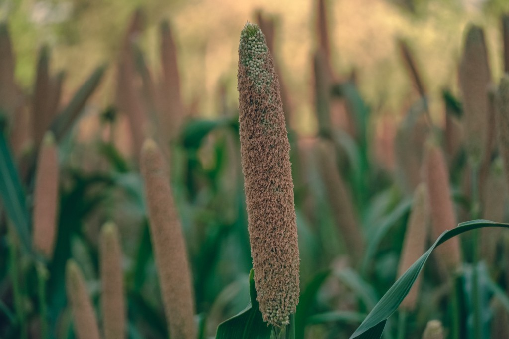

Millet (Setaria italica)
First Cultivated: ~8000 BCE
Optimal Climate: Semi-arid temperate
Water Requirement: 10 to 16 inches annually
Foxtail millet was a founding cereal of northern Chinese agriculture long before rice dominated the south. It tolerates poor soils and short growing seasons, making it vital on the dry loess plateau. Porridges, steamed cakes, and fermented drinks still use millet across East Asia.